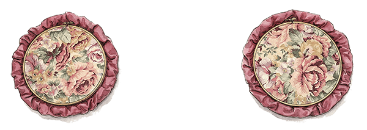
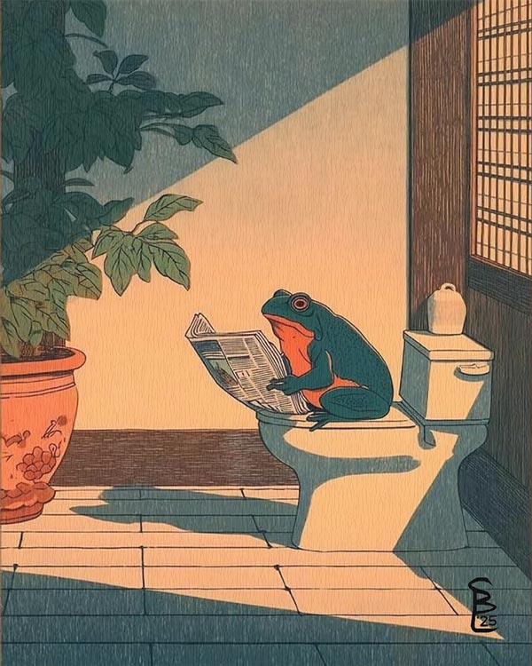
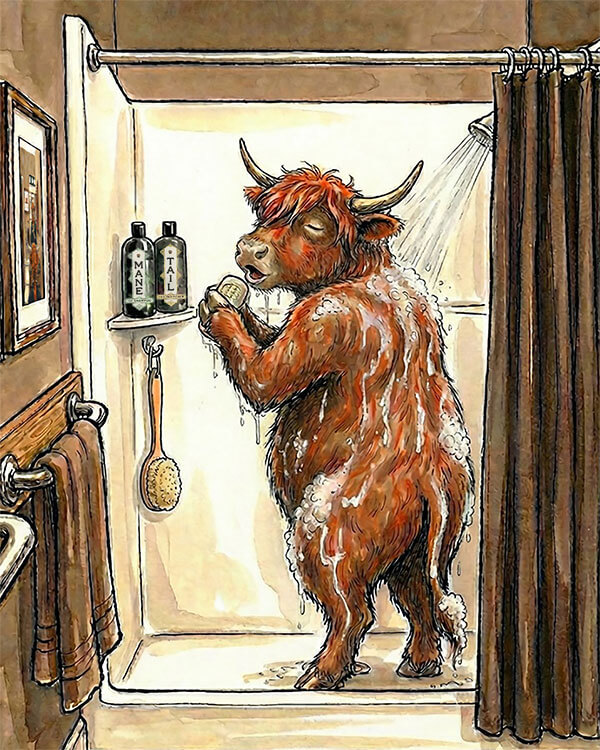
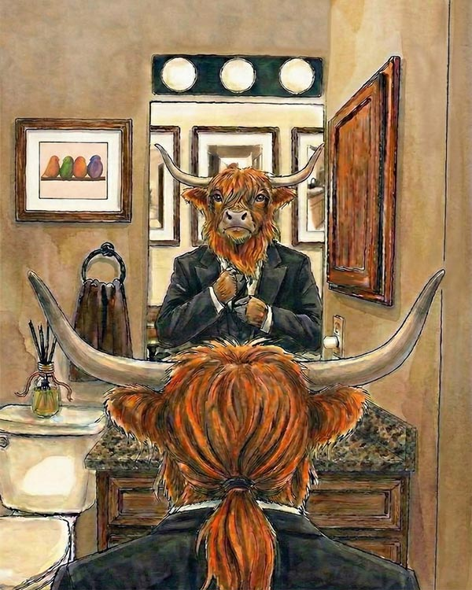
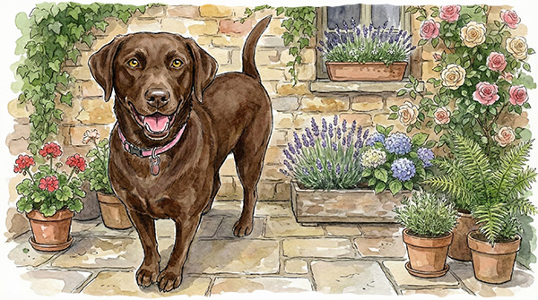
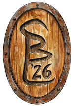

The Origin of
Wallace MacDuff
Every great journey must begin somewhere. The Adventures of Wallace MacDuff began with some inherited floral embroidery hoops and a cold frog on my bathroom wall. Sound silly? Keep reading...

During a recent remodel, I was looking at some floral embroidery hoops on my wall, wondering where they came from and who made them. I knew they were not mine, so I set out to create something that was — a simple illustration that would provide a chuckle while you were doing your business. I crafted a highly-sophisticated frog, who was sitting on the toilet and reading a newspaper. I really liked the artwork, and it did make me chuckle, but as I stared at the proofs, I realized that I did not want to look at something so cold for the next decade.

I needed something warmer. Something with a little more soul. Something with hair and a rigorous beauty routine.
I went back to the digital drawing board, and a pampered, cocoa-loving Scottish Highland cow named Wally came to life. I designed two panels for my bathroom, The Shower Cow and The Mirror Cow, and those pieces not only replaced a cold frog, they became the warm opening pages of a brand new universe.


What began as a desire for better bathroom decor quickly spiraled into a full-blown artistic outlet. Over the next few months, I tucked myself away in the warmth of my ManCave, with my chocolate lab, Lucy, by my side.

I mapped out a storyline, digitally composed and painted every single scene, and meticulously coded the very world you are exploring today. From a cold bathroom wall to a roaring Highland fire, Wally finally found his home, and we are honored to share it with you.

Pull up a chair.
The cocoa is warm
and the story is just beginning.
